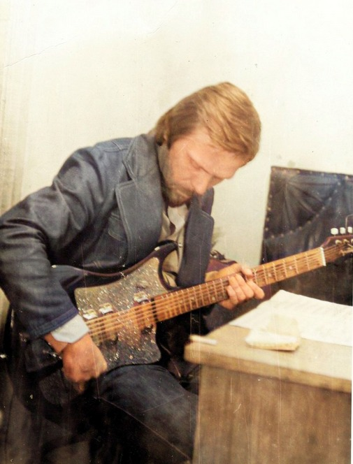
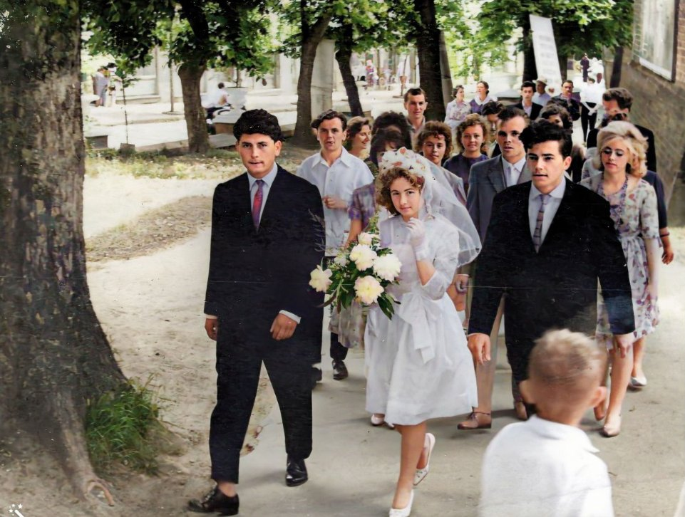
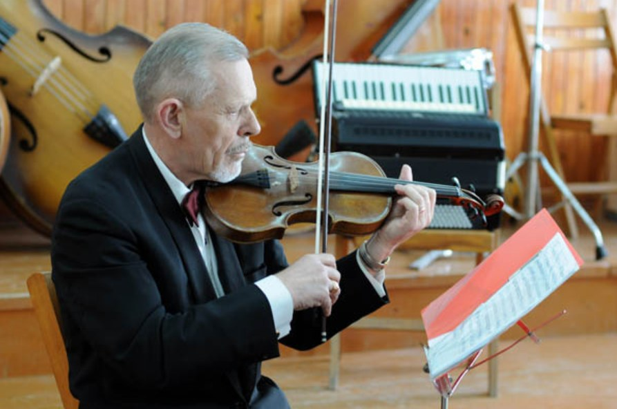
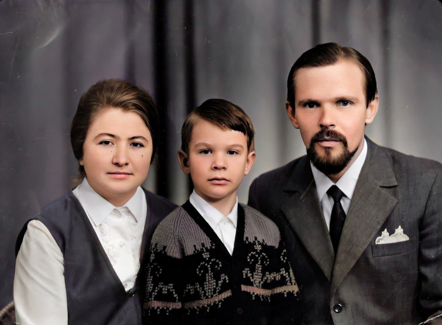
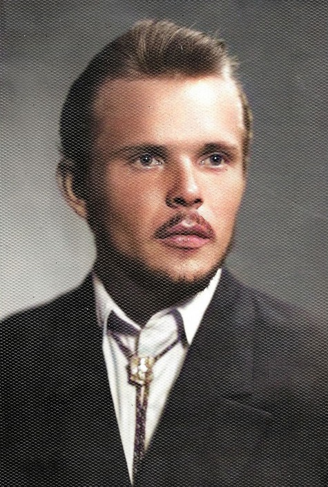
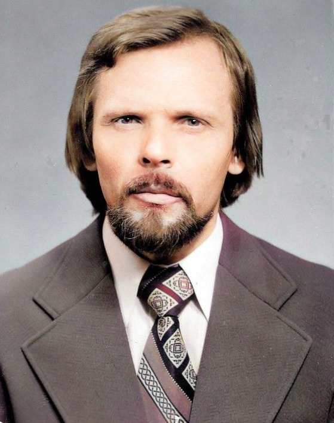

| Id | Глибина | Колір | Ім'я | Народження | Смерть | Місце народження | Інше |
|---|---|---|---|---|---|---|---|
| I1 | 0 | Еротей Сохацький | 17 OCT 1940 | Хмелева, Заліщицький район, Тернопільська область, Україна | EVEN: XIII випуск Заліщицької середньої школи | ||
| I4 | 1 | Григорій Gregorius Сохацький SOCHACKI 32 | 22 MAR 1889 | Dzwiniacz 32 | |||
| I19 | 1 | Павліна (Paulina) Думна (Dumna) 282 | 28 APR 1916 | 28 SEP 1994 | Dzwyniacz 282 | Married Name: Сохацька; OCCU: Директор школи; EVEN: лісорозробки - носила пошту (зустріла ведмедя і злякалась) - пилорама (пожежа, комісія, вигнали) - лісорозробки; EVEN: поновила диплом, направили на роботу в Зозулинці; EDUC: Учительська семінарія - молодші класи; BURI | |
| I20 | 2 | Adamus DUMNYJ 42 | 20 APR 1877 | 26 JUN 1947 | Dzwiniacz 42 | CHR: Baptismit a confirmarit H.Temnicki gr.c. P. localis | |
| I73 | 2 | Марія (Maria) Бариська BARYSKA 145 | 18 SEP 1894 | 1959 | Dżwiniacz 145 | Married Name: Думна; CHR: Baptismit a confirmarit H.Temnicki gr.c. Parochs localis | |
| I21 | 3 | Leo DUMIN (Думний) 43 42 292 | 21 SEP 1851 | Dzwiniacz 43 | RESI; CHR: Eudoxia Rachwalska Obsterix | ||
| I500022 | 3 | Anastasia UHRYNIUK | ABT 1857 | ||||
| I76 | 3 | Simeon BARYSKI 145 | ABT 1852 | Dżwiniacz 145 | RESI | ||
| I500021 | 3 | Anna DMYTRUK | ABT 1856 | Married Name: Baryska | |||
| I500066 | 4 | Jacob UHRYNIUK | ABT 1827 | ||||
| I173 | 4 | Antonius DUMIEN vulgo Dumny | ABT 1825 | RESI | |||
| I500042 | 4 | Maria ZAROWIECKA | ABT 1830 | ||||
| I500067 | 4 | Basilina TESLUK | ABT 1836 | ||||
| I500089 | 4 | Joannes DMYTRUK | ABT 1832 | ||||
| I500087 | 4 | Pelagia PARASYNCZUK | ABT 1834 | Married Name: Baryska | |||
| I500086 | 4 | Petrus BARYSKI 145 | ABT 1828 | Dżwiniacz 145 ? | |||
| I500088 | 4 | Irena KOSTYNIUK | ABT 1835 | Married Name: Dmytruk | |||
| I500914 | 5 | Anna BACZYNSKI 42 | 1791 | ABT 1831 | Blyszczanka 42 | ||
| I500913 | 5 | Alexius ZAROWIECKI | ABT 1790 | Dzwiniacz | |||
| I500912 | 5 | Anna BEZKOROWAJNA | ABT 1804 | Uscieczko ? Torskie ? | Married Name: Dumna | ||
| I500911 | 5 | Jacób DOMIN vulgo Dumny | 1800 | 2 MAY 1847 | RESI | ||
| I524437 | 5 | XXX Kostyniuk | ABT 1811 | ||||
| I501032 | 5 | Joannes ? Baryski 145 ? | ABT 1780 | Swidowa Dzwiniacz ? | RESI | ||
| I501033 | 5 | Anna ? | ABT 1783 | ||||
| I514385 | 6 | Marianna WIERZBICKI | ABT 1769 | ||||
| I507463 | 6 | Maria | ABT 1775 | ||||
| I507462 | 6 | Basilius BEZKOROWAJNY | ABT 1772 | ||||
| I514384 | 6 | Constantinus BACZYNSKI 42 (Baczeski) | ABT 1766 | ||||
| I535188 | 6 | XXX ZAROWIECKI | ABT 1756 | ||||
| I525280 | 7 | ||||||
| I516603 | 7 | XXX Baczynski (Baczeski) de Sas | ABT 1742 | ||||
| I519646 | 7 | Michael ??? Wierzbicki | 1745 |




